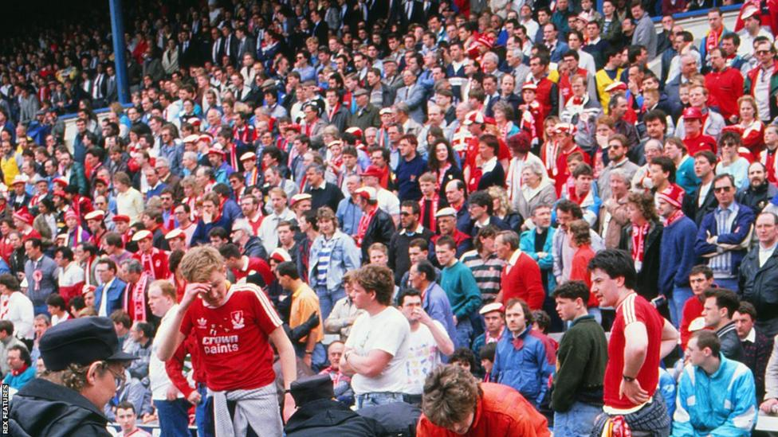

Hillsborough: How Liverpool and Nottingham Forest fans found common ground in tragedy
By Andrew Aloia, Sarah Julian & Nicola Gilroy
BBC Sport & BBC Investigations, East Midlands
April 2024 | Football |

Diane Lynn sat in terror-stricken disbelief on the side of the pitch when a rival fan offered her a cup of tea.
On a famously sunny spring afternoon in 1989 Lynn, then 22, and her 17-year-old brother had been pulled from a crush of bodies at the Leppings Lane end of Hillsborough Stadium in Sheffield.
The crush would ultimately result in the death of 97 of their fellow Liverpool fans.
Lynn and her brother had been in one of the two central pens where the tragedy unfolded.
"I knew I was dying," Lynn says
But she survived, climbing across into a different part of the Leppings Lane terrace in a blur, before finding herself on the pitch in front of the adjacent South Stand.
There, she flopped down in front of a section of Nottingham Forest supporters - fans, just like those of Liverpool, who had made the journey to South Yorkshire to watch their side in an FA Cup semi-final.
"We collapsed next to the Nottingham Forest fans and they were offering us cups of tea and coffee from their flasks," Lynn tells BBC Sounds podcast Hillsborough Unheard: Nottingham Forest Fans.
"I'd love to know who they were. They kind of helped us; they calmed us down. My brother - I've never seen someone in such shock. He was so pale, he couldn't speak and I still don't know what he saw because we have never spoken about it.
"One of the Forest fans was a dad with a couple of kids - you think now, those poor, young kids, what they saw."
More from Sport Insight